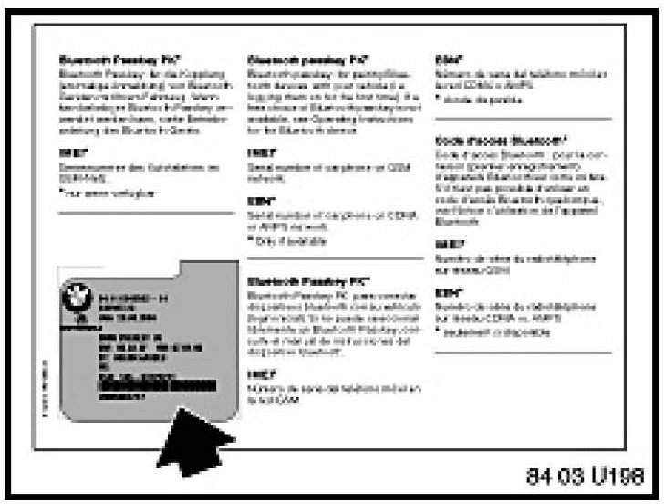
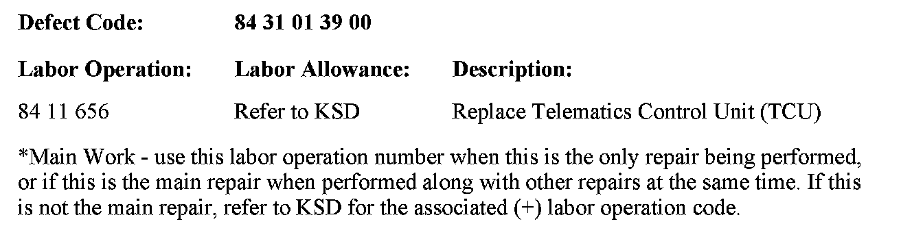

Cell Phone - Echo/Poor Voice Quality On Landline Side
SI B 84 03 08Communication Systems
November 2008
Technical Service
This Service Information bulletin supersedes SI B84 03 08 dated May 2008.
[NEW] designates changes to this revision
SUBJECT
Echo and Poor Voice Quality on the Landline Side of a Call
MODEL
NEW E83 (X3) from 3/07 to 04/01/08 production with Premium Package (ZPP) or BMW Assisttrade; (SA639) and HiFi (SA676)
SITUATION
The customer may complain about the following:
1. Strong reverberation on the landline side of the call (call recipient).
2. The person on the landline side of the call hears his or her own voice after a delay (echo).
3. The hands-free audio volume in the vehicle is too low.
CAUSE
The audio tuning of the Telematics Control Unit (TCU) was set too high.
PROCEDURE
In the case of a customer complaint, follow the procedure below:
1. Verify the customer's complaint with a compatible Bluetooth handset.
2. Perform a short test using BMW diagnostic tools.
3. Work through all corresponding faults.
4. If no cause can be found, replace the TCU.
5. It is NOT necessary to obtain a Part Replacement Authorization (TeileClearing) for this specific issue. Refer to the Warranty section of this bulletin for more details. Additional information can be found in SI B84 23 05 (Enhanced Support for BMW Assist Telematics Control Unit [TCU] with Bluetooth & CPT9000 Phone Systems).
6. Refer to TIS (RA 84 11...) for the TCU replacement procedure.
7. Before installing the new TCU, remove one copy of the Electronic Serial Number (ESN) label and place it on the repair order for reference during warranty claim entry. You will be asked for the new TCU "ESN" when submitting a claim via DCSnet. Refer to SI B01 10 05 for more details.

8. The second ESN label of the TCU should be affixed over the existing label in the Owner's Manual insert (P/N 01 49 0 157 963).
9. Complete the TCU installation.
10. Using Progman V26.01.00 or higher, code the TCU. Refer to SI B09 05 01 "Coding, Individualization and Programming", Procedure A.
11. Test the BMW Assist service for proper operation by placing a test call (press the Roadside Assistance "Wrench" button). Make sure the BMW Assist Response Center has received the correct MIN/MDN, VIN and location of the vehicle. Have the representative update his or her records as needed.
- If a TCU is replaced on a vehicle with an inactive BMW Assist account and a BMW Assist call is made, the call will be routed to an automated system until the TCU is deactivated.
- For customers who would like to renew BMW Assist services, refer to SI B84 22 05 (Reactivation of BMW Assist Services).
COMPATIBLE HANDSET INFORMATION
Before the complaint can be addressed, the particular handset must be verified for compatibility with the respective Bluetooth system installed in the vehicle (e.g., BMW Assist with Bluetooth technology, BTUM, ULF). On vehicles equipped with BMW Assist with Bluetooth wireless technology, to confirm whether or not the phone is compatible, visit www.bmwusa.com/bluetooth for a list of handsets that have passed BMW testing for compatibility. Note the following disclaimer on this web site:
- "This list is provided for reference only. The mobile phones listed here have passed compatibility tests as of the date of testing and meet or exceed minimum standards established by BMW. The list is not a warranty for phone performance or functionality. BMW makes no guarantees or warrantees as to the performance of each phone while connected to your BMW via Bluetooth Wireless Technology. Furthermore, software releases by BMW, the phone supplier or the wireless carrier dated after testing might alter compatibly results. While many phones are offered with Bluetooth Wireless Technology, not all phones support the necessary profiles to work with your BMW. BMW does not guarantee availability or functionality with all wireless carriers. Functions such as synchronizing the address book and transferring a call into or out of the vehicle may function differently from phone to phone".
PARTS INFORMATION

WARRANTY INFORMATION
Covered under the terms of the BMW New Vehicle Limited Warranty.

Disclaimer